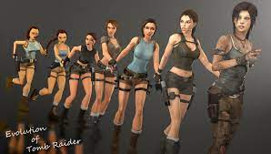
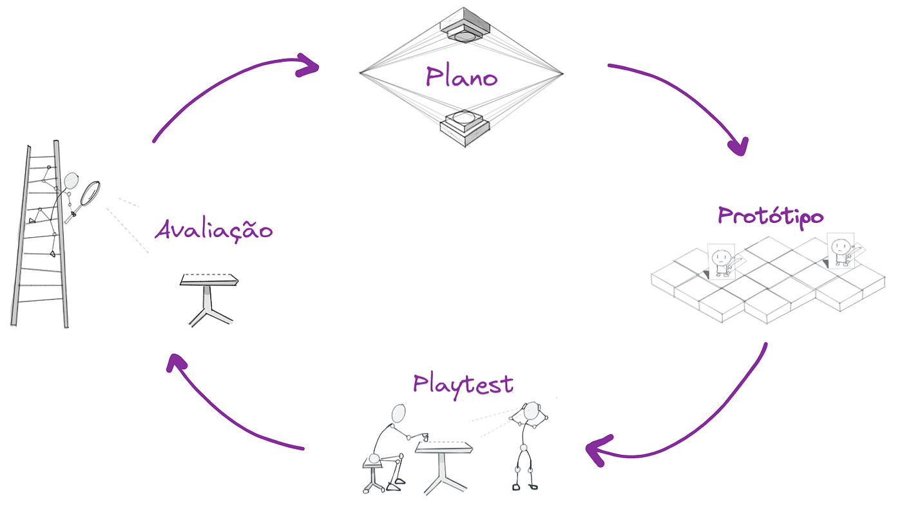

Designer de jogos, desenvolve um planejamento de um jogo eletrônico, deis dos conceitos iniciais até os
utemos detalhes.
Ele cria as jogabilidades, as regras, a estrutura, a narrativa e os personagens, trabalhando com artistas e
programadores.
As funções que o designer de jogos são elabora protótipos, criar uma mecânica,definir níveis e garantir que
o jogo seja funcional e divertido para o publico alvo.
Character Design nos jogos e a Evolução Gráfica

O design de personagens em jogos evoluiu junto com a tecnologia gráfica,
saindo de formas de pixel e simples consoles antigos para o 3D complexos,
com textura detalhadas e animações reassistas.
Essa evolução permitiu que os personagens se ternassem mais expressivos,
possibilitando a criação de conexões emocionais mais profundas com os jogadores.
Além do realismo, trazendo também a liberdade criativa,
com a possibilidade de usar novos estilos artísticos e vareados,
formando variações nos conteúdos e movimentação e o modo de apresentação da historia.
Frmando uma animação
Pontos Abordados

Conceito de Game Design: A fusão da criatividade e da engenharia que dá vida aos universos digitais e
experiências épicas.
Responsabilidades do Designer de Jogos: Criação de mecânicas, narrativas, personagens e objetivos que
definem a interação do jogador.
Processo de Desenvolvimento de Jogos: Desde a ideia inicial até o lançamento, incluindo ideias, mecânicas,
narrativa, level design e testes.
Áreas de Atuação: Design de jogos pode ser exercido em estúdios, agências, startups ou criação independente.
Softwares e Ferramentas: Utilização de softwares como Unity, Unreal Engine, Godot e Blender para a criação
de jogos.
exemplo de site de designer de grafico/ jogo
Esse e a um site que mostra um pouco sobre graficos de designer de um tipo de jogo Genshin Impact